第八章：脉动阵列 (Systolic Array)¶
一、脉动架构的基本概念 (Basic Concepts)¶
基本定义： 脉动架构是一个由处理单元（Processing Element, PE）构成的网络，能够有节奏地计算并传输数据。
“脉动”（Systolic）一词类比于血液在心脏泵力下通过动脉血管的规则流动。在电路中，PE 就像心脏一样，规则地泵入和泵出数据，以维持规则的数据流,。
脉动架构的主要特点
- 处理单元（PE）一致性： 典型情况下，阵列中的每一个节点（PE）都是相同的。
- 局部互连性： 每个 PE 只与其相邻的 PE 进行通信，全局布线较少。这种通信具有局部性（Locality）且非常规则。
- 全流水化设计： 脉动阵列通常是全流水的，PE 间的所有通信边沿都包含延迟单元。
- SIMD 系统： 它属于单指令多数据（SIMD）系统，特别适用于对大量规则数据流进行单一的重复计算。
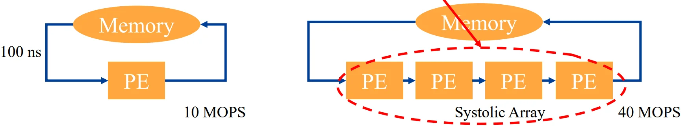
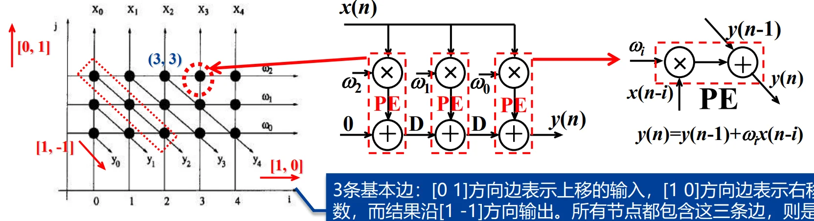
4. 脉动阵列的种类与应用¶
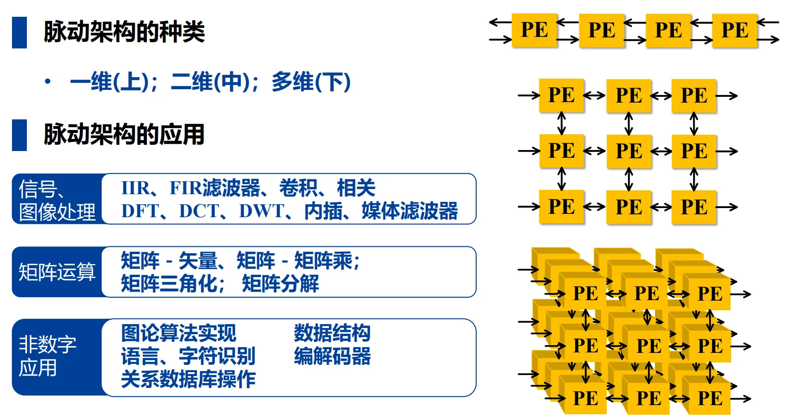
这是为您整理的《VLSI数字通信原理与设计》第八章——板块二：脉动架构的设计方法的学习笔记。
二、脉动架构的设计方法 (Design Methodology)¶
脉动架构的设计核心在于将算法转化为规则的图形表示，再通过数学变换映射到硬件电路上。其核心技术被称为线性映射技术 (Linear Mapping)。
2.1 核心设计流程¶
脉动阵列的设计通常遵循以下四个标准化步骤：
- 绘制算法的规则依赖图 (Regular DG)。
- 添加空间与时间矢量（投影矢量 \(d\)、处理器空间矢量 \(p\) 和调度矢量 \(s\)）。
- 进行边缘映射 (Edge Mapping)。
- 构造最终的脉动阵列电路。
2.2 依赖图 (Dependence Graph, DG)¶
- 定义： DG 是描述算法中运算关系的有向图，其中节点代表计算，边代表节点间的优先约束（执行顺序）。
- 规则 DG (Regular DG)： 若 DG 中任意节点沿某一方向的边，在所有其他节点处也沿相同方向存在，则称之为规则 DG。
- DG 与 DFG 的区别：
| DG | DFG |
|---|---|
| 包含算法所有循环的计算 | 通常只包含一个循环 |
| 不包含延时单元 | 包含延时单元 |
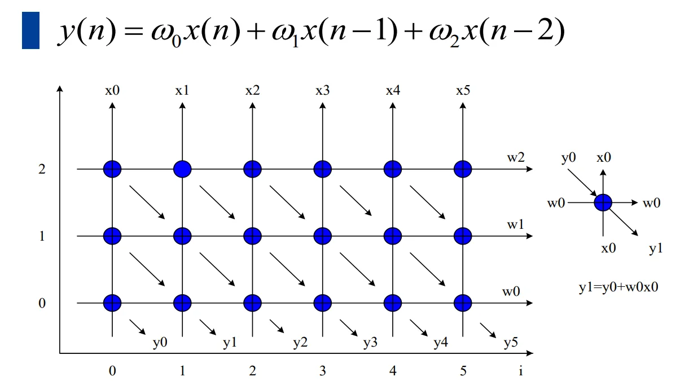
2.3 线性映射中的矢量定义¶
为了将二维或多维的算法过程映射到一维或低维的 PE 阵列中，需要定义以下关键矢量:
- 节点标号矢量 \(I\)： 描述 DG 中节点的位置，如 \(I^T = (i, j)\)。
- 投影矢量 \(d\)： \(d^T = (d_1, d_2)\) , 又称迭代矢量，给出投影方向。落在该矢量方向上的所有节点将被映射到同一个 PE 上执行。
- 处理器空间矢量 \(p\)： \(p^T = (p_1, p_2)\) , 决定节点 \(I\) 被分配到哪一个标号的 PE。计算公式为：\(Processor\ ID = p^T I\)。
- 调度矢量 \(s\)： \(s^T = (s_1, s_2)\) , 决定节点 \(I\) 在何时被执行。计算公式为：\(Time\ Slot = s^T I\)。
映射的可行性约束
并不是所有的矢量组合都是合法的，设计必须满足以下约束条件以确保电路逻辑正确：
1. 空间约束 \(p^T d = 0\)： 处理器矢量 \(p\) 必须与投影矢量 \(d\) 正交。
2. 时间约束 \(s^T d \neq 0\)： 映射到同一个 PE 的两个不同节点不能在同一时间执行，即调度矢量 \(s\) 与投影矢量 \(d\) 不能正交。
3. 因果约束 \(s^T e \ge 0\)： 映射后的电路中，任何边 \(e\) 的延迟必须非负。如果延迟为 0，则该变量为广播变量。
2.4 边缘映射 (Edge Mapping)¶
这是从抽象图到具体电路的关键：
- 方向映射： DG 中的边 \(e\) 映射到 PE 阵列后，其物理连接方向为 \(e^{\prime} = p^T e\)。
- 延迟映射： 映射后的边所包含的寄存器（延时单元）数量为 \(D = s^T e\)。
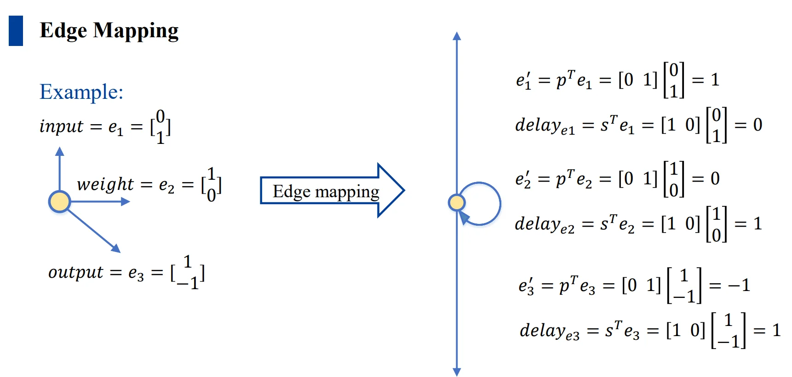
2.5 硬件利用效率 (HUE)¶
硬件利用效率衡量 PE 在时间轴上的忙碌程度。
- 公式： \(HUE = \frac{1}{|s^T d|}\)。
- 物理意义： \(|s^T d|\) 代表同一 PE 执行相邻两个任务之间的时间间隔。该值越大，表示 PE 空闲时间越多，利用率越低。在理想设计（如 \(B1\) 设计）中，\(s^T d = 1\)，此时 \(HUE = 100\%\)。
2.6 案例：FIR 设计 \(B1\) 方案¶
以 3 阶 FIR 滤波器：
为例，选取 \(d^T=(1, 0), p^T=(0, 1), s^T=(1, 0)\)：
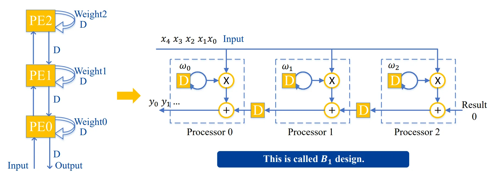
这是为您整理的《VLSI数字通信原理与设计》第八章——板块三：典型应用案例分析的学习笔记。
三、典型应用案例分析 (Applications)¶
本部分通过 FIR 滤波器和卷积神经网络（CNN）两个典型案例，展示如何利用线性映射技术设计不同的脉动阵列架构。
3.1 FIR 滤波器脉动阵列设计 (FIR Systolic Arrays)¶
根据投影矢量 \(d\)、处理器空间矢量 \(p\) 和调度矢量 \(s\) 选取方案的不同，FIR 滤波器可以衍生出多种脉动架构设计：
3.1.1 B1 设计方案 (Broadcast Inputs, Move Results, Weights Stay)¶
- 矢量选择： \(d^T = (1, 0), p^T = (0, 1), s^T = (1, 0)\)。
- 性能： 由于 \(|s^T d| = 1\)，其 硬件利用效率 (HUE) 为 100%。
- 边缘映射特性：
- 输入 \(x\)： 前向广播 (Input forward)，无延迟单元 (\(s^Te=0\))。
- 权重 \(w\)： 固定在 PE 中 (Weights stay)，内部循环有延迟。
- 结果 \(y\)： 向后移动 (Result backward)，PE 间包含延迟单元 (\(s^Te=1\))。
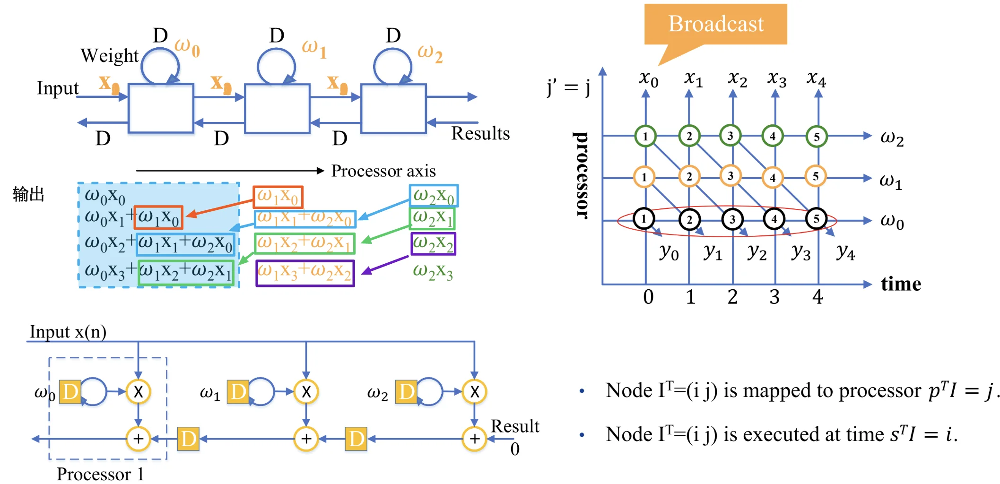
3.1.2 B2 设计方案 (Broadcast Inputs, Move Weights, Results Stay)¶
- 矢量选择： \(d^T = (1, -1), p^T = (1, 1), s^T = (1, 0)\)。
- 性能： \(HUE = 100\%\)。
- 边缘映射特性： 输入 \(x\) 广播，权重 \(w\) 移动，结果 \(y\) 固定在 PE 内。
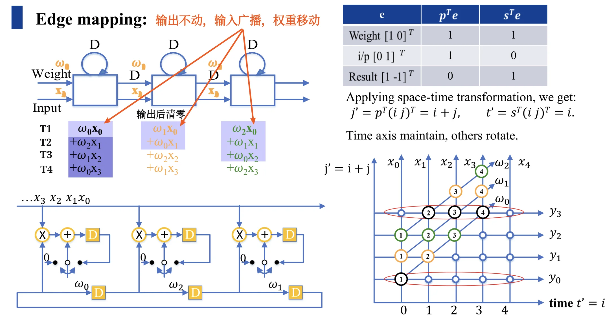
3.1.3 F 设计与 R1 设计¶
F 设计 (Fan-In Results)： 结果反向广播，输入移动，权重固定。\(s^T = (1, 1)\)，输入和权重均带有延迟单元。
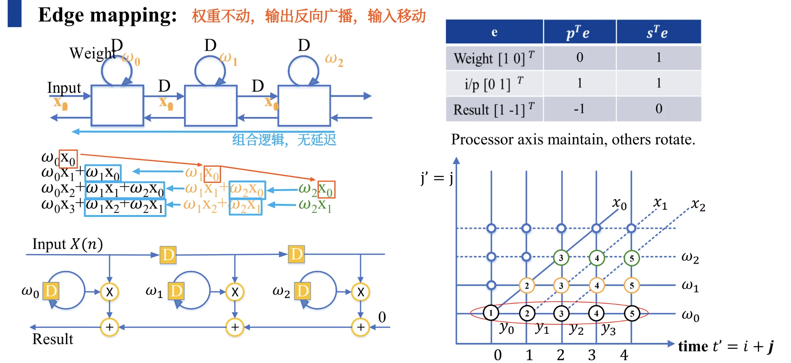
R1 设计： 结果固定，输入与权重以相反方向移动。其特点是 \(s^T d = 2\)，导致 \(HUE = 50\%\)，即 PE 每两个时钟周期才执行一次有效计算。
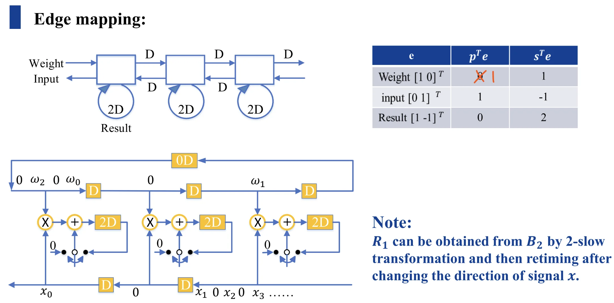
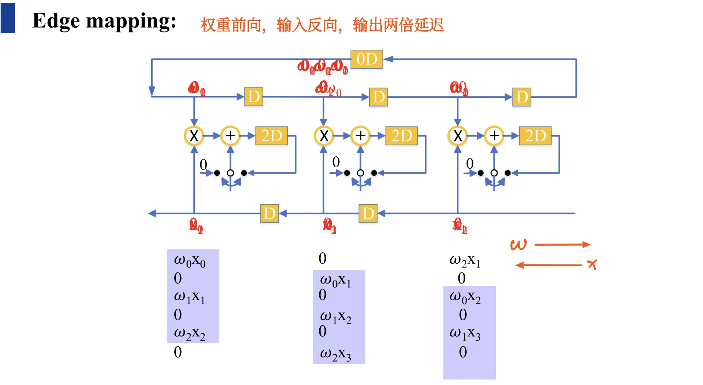
注： R1 设计可以通过对 B2 设计进行 2-slow 变换并重定时（Retiming）得到。
3.2 卷积神经网络 (CNN) 硬件设计¶
在 CNN 加速器设计中，脉动阵列的核心目标是实现数据复用 (Data Reuse)，以减少对外部存储（DRAM）的访问带宽需求。
3.2.1 行固定 (Row-Stationary, RS) 卷积设计¶
这是 Eyeriss 等高效能加速器采用的核心策略，旨在最大化利用 PE 内部的寄存器堆 (Register File)。
数据复用策略：
- 卷积核复用 (Filter Reuse)： 同一卷积核参数在水平方向上的 PE 间复用。
- 特征图复用 (Fmap Reuse)： 特征图变量沿 PE 阵列的对角线方向复用。
- 部分和累加 (Partial Sum Accumulation)： 计算出的部分和在垂直方向上进行移位累加。
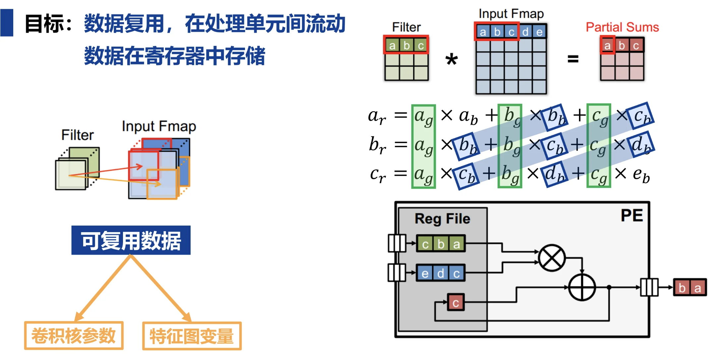
3.2.2 维度扩展¶
- 一维到二维： 通过将一维行固定设计进行排布，可以处理更大规模的卷积运算（如 \(3 \times 3\) 卷积核处理 \(5 \times 5\) 特征图）。
- 能效优化： 通过这种脉动阵列的数据流控制，相比于传统设计，能量效率可以得到显著提升。
更详细的示意图见 cnn.md